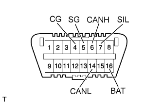

HOW TO TROUBLESHOOT ECU CONTROLLED SYSTEMS > GENERAL INFORMATION |
| TROUBLESHOOTING PROCEDURES |
| Procedure Type | Details | Troubleshooting Method |
| DTC Based Diagnosis | The diagnosis procedure is based on the DTC that is stored. | The malfunctioning part is identified based on the DTC detection conditions using a process of elimination. The possible trouble areas are eliminated one-by-one by use of the intelligent tester and inspection of related parts. |
| Symptom Based Diagnosis (No DTCs stored) | The diagnosis procedure is based on problem symptoms. | The malfunctioning part is identified based on the problem symptoms using a process of elimination. The possible trouble areas are eliminated one-by-one by use of the intelligent tester and inspection of related parts. |
| DESCRIPTION |
| DATA LINK CONNECTOR 3 (DLC3) |
|  |
The vehicle ECU uses the ISO 15765-4 communication protocol. The terminal arrangement of the DLC3 complies with SAE J1962 and matches the ISO 15765-4 format.
| Terminal No. (Symbol) | Terminal Description | Condition | Specified Condition |
| 7 (SIL) - 5 (SG) | Bus "+" line | During transmission | Pulse generation |
| 4 (CG) - Body ground | Chassis ground | Always | Below 1 Ω |
| 5 (SG) - Body ground | Signal ground | Always | Below 1 Ω |
| 16 (BAT) - Body ground | Battery positive | Always | 11 to 14 V |
| 6 (CANH) - 14 (CANL) | CAN bus line | Engine switch Off* | 54 to 69 Ω |
| 6 (CANH) - 4 (CG) | HIGH-level CAN bus line | Engine switch Off* | 200 Ω or higher |
| 14 (CANL) - 4 (CG) | LOW-level CAN bus line | Engine switch Off* | 200 Ω or higher |
| 6 (CANH) - 16 (BAT) | HIGH-level CAN bus line | Engine switch Off* | 6 kΩ or higher |
| 14 (CANL) - 16 (BAT) | LOW-level CAN bus line | Engine switch Off* | 6 kΩ or higher |
Connect the cable of the intelligent tester to the DLC3, turn the engine switch On (IG) and attempt to use the tester. If the display indicates that a communication error has occurred, there is a problem either with the vehicle or with the tester.